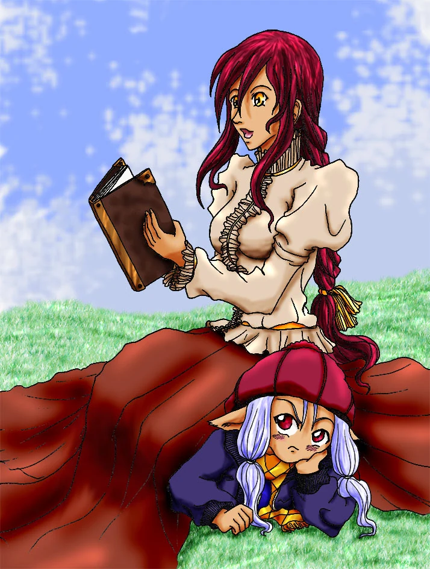

Aelysse est une
jeune fille timide et renfermée qui étudie consciencieusement afin de
réussir ses examens de fin d'année. Elle vit seule avec son père qui se
montre très stricte envers elle. Pour cette raison, elle n'ose pas se
plaindre lorsqu'elle est persécutée par des filles de son école.
Heureusement, elle est souvent sauvée par sa meilleure amie, Elia, une
jeune fille vive et énergique.
Aelysse était résignée à vivre
une vie morne et triste lorsqu'elle fit la rencontre de Wambas, un
étrange nain muni d'ailes. Wambas est contrôleur de Contes dans le monde
d'Elenda, le
monde où ont lieu les contes, mythes et légendes qui sont lues dans le
monde réel. Il est chargé de contrôler leur bon déroulement.
Malheureusement, un sang-mêlé cherche à détruire les deux mondes en
faussant les histoires et Wambas est chargé de trouver quelqu'un pour
empêcher ce cataclysme. Et qui d'autre que notre héroïne, également
sang-mêlée, va donc pouvoir l'aider ?!
Aelysse va être entraînée dans une
aventure qui va se révéler bien plus périlleuse qu'elle ne le croit.
Elle va rencontrer pleins de gens extraordinaires, des ennemis
implacables et surtout, elle se découvrira.
Bon voyage dans les Contes d'Aelysse ! !